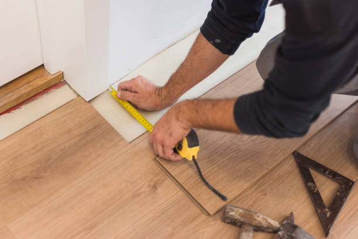

Sublette Kansas
info@Tophandyman.pro
Sublette Kansas
info@Tophandyman.pro

Reliable handyman services in Sublette Kansas ! From repairs to installations, we handle it all with precision. Trusted experts ensuring your home improvement needs are met efficiently. Call today!
Click Here To Call Us (877) 848-1711Are you searching for reliable and skilled handyman services in Sublette Kansas ? Look no further! Our expert team is here to handle all your home repair and maintenance needs with precision and care. From small fixes to large projects, we’re your one-stop solution for a stress-free experience.
At Handy man, we pride ourselves on providing high-quality services tailored to meet your needs. Whether it’s fixing leaky faucets, assembling furniture, patching drywall, or painting a room, our professionals bring years of experience to every job. We’re fully equipped to tackle a wide range of tasks, ensuring your home or business runs smoothly.
Why choose us? We’re known for our punctuality, attention to detail, and commitment to customer satisfaction. We understand the importance of maintaining your property, so we deliver dependable services at competitive rates. Plus, we offer flexible scheduling to suit your busy lifestyle in Sublette Kansas .
As a trusted handyman company, we prioritize using premium materials and modern tools to achieve long-lasting results. No job is too small or too big for us to handle. Contact us today to discover why residents in Sublette Kansas turn to us for their handyman needs. Let us make your to-do list a thing of the past!
Residential & commercial Handy man
Quality services at affordable prices
Immediate 24/ 7 emergency services


When it comes to reliable and professional handyman services, look no further than our expert team in Sublette Kansas . We specialize in a wide range of handyman solutions designed to meet the unique needs of both residential and commercial clients. Whether you're a homeowner needing quick repairs or a business owner requiring maintenance, our skilled technicians are ready to handle it all.
From minor repairs like fixing leaky faucets or drywall damage to more complex tasks such as electrical installations and flooring, we ensure every job is completed to the highest standards. Our team is well-equipped with the latest tools and techniques to ensure your property stays in top condition.
We understand the importance of timely and efficient service, so we pride ourselves on offering fast response times and flexible scheduling. No project is too big or small, and our commitment to quality ensures that every task is done right the first time. Whether you need help with home renovations or require routine maintenance for your commercial property, you can count on us for dependable handyman solutions in Sublette Kansas .
Choose our expert handyman services in Sublette Kansas for affordable, professional, and timely solutions. Get in touch today to discuss your needs and discover why we're the trusted name for residential and commercial handyman services in the area.
Residential & commercial Handy man
Quality services at affordable prices
Immediate 24/ 7 emergency services
Proper weatherproofing and insulation are essential for keeping your home comfortable and energy-efficient. Our weatherproofing and insulation services include assessing your home's current insulation levels and sealing drafts to enhance energy efficiency. We offer solutions that contribute to lower energy bills and improved comfort throughout the seasons. Trust our expert team to optimize your home for the best performance against the elements.

Your home's siding is your first line of defense against the elements. It not only affects your home's appearance but also its energy efficiency and structural integrity. At Handy man, we provide expert siding repair and installation services ensuring your home remains protected and beautiful.
Our team is skilled in working with various siding materials, including vinyl, wood, and fiber cement, allowing us to provide tailored solutions to meet your preferences and budget. Whether you’re looking to repair damaged siding or install new siding to enhance your home’s aesthetic appeal, we have the expertise to get the job done right.
Why choose us? We are committed to quality, reliability, and customer satisfaction. Our skilled craftsmen take great pride in their work, ensuring every detail is handled with care. Trust Handy man for exceptional siding services that protect and beautify your home.

Embrace the future of living with our smart home installation and setup services . Our team specializes in integrating smart technologies that enhance convenience, security, and energy savings. From smart thermostats to advanced security systems, we provide full-service installation and customization tailored to your needs. Choose us to transform your home into a modern, connected space that enhances your lifestyle.

Seasonal maintenance is essential for keeping your home in top shape at all times. Our seasonal and outdoor handyman services in Sublette Kansas ensure that your property remains well-maintained and ready for every season’s challenges.
From summer yard clean-up to winterizing your home, our team is versatile and ready to assist with a wide range of seasonal tasks. We can help with lawn care, gutter cleaning, snow removal, and more. Our services are customized to fit the seasonal needs of your home and property.
What sets us apart? Our commitment to thorough and reliable service means that you can count on us to take care of your seasonal maintenance without the hassle. We have the right equipment and expertise to provide effective solutions for your outdoor needs.
Our seasonal and outdoor handyman services in Sublette Kansas will help you enjoy your home without the stress of maintenance. Contact us today to learn more about how we can contribute to your home’s upkeep throughout the year.

Seasonal home maintenance is crucial for keeping your property in top shape year-round. At Handy man, we offer comprehensive spring and fall home maintenance services helping you prepare your home for changing weather conditions.
Our team conducts thorough inspections and performs necessary maintenance tasks, such as checking roofs, cleaning gutters, inspecting HVAC systems, and preparing gardens for seasonal changes. We aim to prevent problems before they arise, extending the life of your essential home systems.
Why choose us for seasonal maintenance? Our commitment to quality and attention to detail ensure that no aspect of your home is overlooked. With Handy man, you can rest easy knowing your home is ready for whatever the season may bring, with reliable service from trusted professionals in Sublette Kansas .
First impressions count, and your yard is the first thing people see when visiting your home. Our yard maintenance and landscaping services in Sublette Kansas will help you create an inviting outdoor space. Whether you need regular lawn care, garden design, or seasonal clean-ups, our experienced team is here to help. We take pride in delivering professional landscaping solutions that enhance your property’s beauty and value. Trust us to transform your outdoor areas into stunning landscapes you'll love.

The holiday season is a time for celebration and joy, and nothing enhances the festive spirit quite like beautifully installed holiday lights. At Handy man, we provide professional holiday light installation services ensuring your home shines bright during the holidays.
Our team handles everything from design to installation, creating stunning displays that highlight your home’s best features. We use high-quality, safe lighting products and ensure that every aspect of the installation is secure and professional.
Why struggle with tangled lights and ladders when you can trust Handy man to do the job? We focus on providing stress-free, reliable service that allows you to enjoy the festivities. Make your holidays magical with our expert light installation services .

Outdoor furniture enhances your outdoor living space, but it can experience wear and tear from exposure to the elements. Our outdoor furniture repair and assembly services are designed to restore and maintain your outdoor furniture, allowing you to enjoy your patio, deck, or garden.
Whether you need a new piece of furniture assembled or existing furniture repaired, our skilled team is ready to assist. We work with various materials, ensuring that your outdoor furniture is both functional and stylish.
What sets us apart? We are committed to high-quality craftsmanship and outstanding customer service. Our technicians take the time to understand your needs and offer effective solutions that fit your budget.
Don’t let damaged furniture keep you from enjoying your outdoor space. Trust our team for all your outdoor furniture repair and assembly needs .

Your roof is one of the most critical components of your home, safeguarding you from moisture, heat, and debris. At Handy man, we specialize in roof inspection and minor repair services in Sublette Kansas ensuring your roof remains in excellent condition.
Our experienced inspectors assess your roof thoroughly, identifying potential issues before they become significant problems. If repairs are necessary, we skillfully address them, using high-quality materials to ensure lasting protection for your home.
Why trust Handy man? We emphasize transparent communication, quality workmanship, and customer satisfaction. Your home’s protection is our priority, and we work diligently to keep your roof in top shape for years to come. Count on us for expert roof inspection and repair services in Sublette Kansas .
Years Experience
Expert Technicians
Satisfied Clients
Compleate Projects
At Top Handyman, we take pride in being your trusted, reliable partner for all handyman services in Sublette Kansas . Whether it's a small repair, home improvement, or major renovation project, we offer expert solutions that you can count on. We’re a local business that understands the needs of our customers in Sublette Kansas and strive to provide top-notch service at competitive prices.
Experience and Expertise You Can Trust
With years of experience in the industry, our team of skilled professionals is equipped to handle a wide range of services, including plumbing, electrical, carpentry, painting, and more. No job is too big or small for us. We pride ourselves on our versatility, offering comprehensive services that make us your one-stop-shop for all home maintenance needs.
Quality Work, Every Time
At Top Handyman, we don’t just get the job done; we do it right. Our commitment to quality ensures that each project is completed to the highest standards. We use only premium materials and the latest tools to ensure long-lasting results, and we’re committed to exceeding your expectations every time.
Affordable and Transparent Pricing
We believe in honest pricing with no hidden fees. Our transparent pricing model ensures that you know exactly what to expect before we begin work, making Top Handyman an affordable choice for homeowners in Sublette Kansas . Let us help you tackle your to-do list with professionalism, reliability, and affordability.
Choose Top Handyman—the trusted handyman service in Sublette Kansas you can rely on!
Home repairs and maintenance can often be daunting tasks for homeowners in Sublette Kansas . Whether it’s fixing a leaky faucet, repairing squeaky floors, or addressing general wear and tear, you need a reliable handyman service that you can trust. Our team of experienced professionals is dedicated to providing top-quality home repair services tailored to your unique needs. We use the latest techniques and tools to ensure that every job is done right the first time.
Choosing us means choosing quality, reliability, and efficiency. Our handymen are skilled in a wide range of home repair services, and we understand the specific requirements of maintaining homes . We pride ourselves on our attention to detail and our commitment to customer satisfaction. No job is too big or too small for us.
When you work with us, you're not just hiring a handyman; you're partnering with a team that values your home as much as you do. Our extensive experience in home repairs ensures that we can quickly diagnose problems and offer effective solutions. We believe that maintaining your home shouldn’t be a hassle, so let us handle your repairs while you sit back and relax.
When you purchase new furniture, the excitement can quickly fade when it comes to assembling it. Our furniture assembly services take the hassle out of putting together your new purchases. We specialize in assembling furniture from all major brands and types, ensuring that your pieces are correctly fitted and ready for use. Our professionals bring not only the tools but also the expertise needed to make your assembly experience smooth and stress-free. With us, you can enjoy your new furniture without the headache of complex instructions and missing pieces.
Drywall issues can detract from the beauty and functionality of your home. Whether you have holes from wall anchors, water damage, or simply outdated drywall that needs replacing, our specialized drywall repair and installation services are exactly what you need.
Our skilled technicians are proficient in all aspects of drywall work, ensuring high-quality repairs or installations. We employ the latest techniques and materials to ensure that your drywall looks seamless and that the repair lasts for years. No matter the size of the job, our team is dedicated to delivering excellent results on time and within your budget.
Why choose us for your drywall needs We have a reputation for excellence in our community, backed by numerous satisfied customers. Our work is thorough, and we pay attention to the smallest details. We also prioritize quality customer service – you can count on us to communicate clearly throughout the process and provide you with all the information you need.
When you call us for your drywall repair or installation, you can rest easy knowing that you’re in good hands. We guarantee our workmanship and are committed to making sure your home looks its best.
When it comes to electrical work, safety is paramount. Our electrical repair and installation services are conducted by licensed professionals who adhere to the highest safety standards. From simple light fixture replacements to complex wiring systems, we handle all aspects of electrical service. Our team understands the intricacies of electrical systems and is committed to delivering reliable, efficient solutions. With our expertise, you can rest assured that your electrical needs are in capable hands, minimizing risks and maximizing functionality.
Plumbing problems can disrupt your daily life, causing inconvenience and potential damage. From leaky faucets to burst pipes, every issue requires prompt attention. Handy man offers expert plumbing repair and installation services dedicated to keeping your home’s plumbing systems running smoothly.
Our experienced plumbers are skilled in diagnosing a wide range of plumbing problems and providing effective solutions. We work with all plumbing systems and fixtures, ensuring that installations, repairs, and replacements are completed to the highest standards. Our team is equipped to handle emergencies, so you never have to wait long for help when problems arise.
We pride ourselves on our professionalism, transparency, and attention to detail. When you choose Handy man, you’re choosing a team that prioritizes your needs and delivers top-quality service. Trust us to restore comfort and functionality to your home in Sublette Kansas .
A fresh coat of paint can transform the look and feel of your home. Our professional painting and touch-up services are perfect for homeowners looking to revitalize their spaces or touch up areas that have been subject to wear and tear.
Our skilled painters bring years of experience and a keen eye for detail. We ensure that all surfaces are properly prepped before painting, using high-quality paints that provide a lasting finish. We understand the importance of color selection and can offer guidance on the perfect shades to match your style and decor.
Why choose our painting services in Sublette Kansas ? We take pride in our commitment to customer satisfaction, ensuring that every stroke is flawless and meets your standards. We also aim to minimize disruption to your daily life by working efficiently and cleaning up after ourselves.
From interior to exterior painting, to touch-ups, our team is dedicated to providing exceptional service at every step. Experience the joy of a home that reflects your personal style, beautifully finished by our expert hands.
Tiled floors and surfaces add significant value and beauty to your home, but over time, they can become worn or damaged. At Handy man, we specialize in tile and grout repair services across Sublette Kansas helping to restore the beauty of your tiled areas.
Our skilled technicians use the latest methods and high-quality materials for tile repair and grout cleaning. Whether dealing with cracked tiles or stained grout, we are committed to reviving your surfaces, ensuring they are not only visually appealing but also durable. Grout sealing services are also available, offering extra protection against stains and moisture.
When you choose us, you’re opting for quality and expertise that ensures your tiles and grout last longer. Customer satisfaction is our priority, and we value the trust you place in us to enhance your home’s beauty and functionality in Sublette Kansas .
Doors and windows are essential for security and energy efficiency but can be subject to wear and damage. Our door and window repair services address all issues from broken hinges and locks to sealing gaps that let drafts in. We provide a comprehensive evaluation to ensure that your doors and windows are operating correctly and efficiently. By choosing our services, you’ll enjoy improved insulation, enhanced security, and better aesthetics. Trust us to keep your home secure and energy-efficient.
Proper caulking and sealing are vital for protecting your home from moisture intrusion and improving energy efficiency. Our caulking and sealing services focus on areas that require attention like bathrooms, kitchens, and windows. Our skilled handymen use high-quality materials and sealants to create an airtight and watertight seal that enhances your home’s comfort. By choosing us, you can prevent costly damage and improve your home’s energy efficiency, leading to savings on utility bills.
Minor home renovations can breathe new life into your living space without the need for a major overhaul. Whether it’s updating your kitchen, adding built-in shelves, or finishing a basement, our minor renovation services offer high-quality craftsmanship and personalized designs to meet your needs.
Our experienced team is dedicated to helping you achieve your vision, no matter how big or small. We collaborate closely with you to ensure that every detail aligns with your goals and expectations. From planning and design to execution, we handle every aspect with care and precision.
Why choose us for your minor renovations? We have built a reputation for excellence based on our commitment to customer satisfaction and high-quality workmanship. Our team will keep you informed throughout the renovation process, ensuring transparency and open communication.
We understand that renovating your home is a significant investment, which is why we prioritize providing both value and quality. Let us help you transform your home into a space that reflects your style and meets your lifestyle needs.
We offer a wide range of specialized handyman services tailored to meet the unique needs of our clients. Whether it’s custom shelving, cabinet repairs, or unique installations, our skilled craftsmen are ready to assist. Our diverse skill set allows us to tackle projects of all kinds, big or small. Choose us for our professionalism, varied expertise, and a dedication to customer satisfaction that makes us the go-to option for handyman services in your area.
A well-maintained deck can enhance your outdoor living space. Our deck repair and building services are designed to restore the beauty and safety of your deck or build a brand-new one to enhance your property. From repairing boards to constructing custom decks, our experts ensure comprehensive service that transforms your vision into reality. Trust us to create an outdoor space that adds value and enjoyment to your home.
A fence is not merely a boundary; it adds privacy, security, and curb appeal to your property. At Handy man, we offer expert fence installation and repair services in Sublette Kansas ensuring that your fencing needs are met with precision and care.
Our skilled team works with various materials, including wood, vinyl, and chain-link, to create or restore fences that suit your style and functional needs. Whether you need a new fence installation, repairs on a weathered fence, or a replacement for a broken section, we are your reliable choice.
We pride ourselves on our customer service and commitment to quality. With Handy man, you can expect a personalized approach that ensures your vision is realized. Trust us to enhance your property with our professional fencing solutions .
The right flooring can transform your space, adding style, comfort, and value to your home. At Handy man, we specialize in flooring installation services, including laminate, vinyl, and more . Our team is dedicated to providing exceptional craftsmanship and customer service.
We understand that selecting the perfect flooring can be overwhelming, which is why we offer expert guidance throughout the selection process. Our professionals will work with you to choose the best materials that fit both your aesthetic preferences and lifestyle needs.
Installation is just as crucial as selection; our experienced team ensures that your flooring is installed flawlessly, with attention to detail that guarantees a lasting finish. Collaborate with Handy man for all your flooring needs, and enjoy a beautiful and durable floor in your Sublette Kansas home.
In today’s world, energy efficiency is more important than ever. Upgrading your home’s energy systems not only reduces your environmental footprint, but it can also save you money on your utility bills. At Handy man, we offer comprehensive home energy efficiency upgrade services helping you improve your home’s energy performance.
Our services range from installing energy-efficient windows and doors to upgrading insulation and HVAC systems. Our knowledgeable team conducts a thorough assessment of your property to identify areas where upgrades can be made, ensuring that you receive tailored solutions that make a tangible difference.
Why choose us for your energy upgrades? We are dedicated to not only enhancing your home’s efficiency but also improving your overall comfort. Customer satisfaction, transparency, and high-quality workmanship are at the heart of what we do. Trust Handy man to help you create a more energy-efficient home.
Fixtures in your kitchen and bathroom are not just functional; they also define the space's overall look. Our bathroom and kitchen fixture repair services in Sublette Kansas specialize in addressing leaks, clogs, and malfunctions. We handle repairs for sinks, faucets, cabinets, and much more, ensuring your fixtures operate smoothly. Our expertise in fixture repairs means you avoid the cost of replacements, and we work efficiently to minimize disruption in your home. Count on us for reliable and quality repairs that rejuvenate your kitchen and bath.
Gutters play a critical role in directing water away from your home. Our gutter cleaning and repair services in Sublette Kansas ensure your gutters are functioning effectively, preventing water damage and maintaining the integrity of your home. We tackle debris buildup, check for leaks, and provide necessary repairs to keep your gutter system in top condition. Trust our services to safeguard your home from potential water-related issues.
Over time, dirt, algae, and grime can dull the exterior of your home. Our pressure washing services provide an efficient solution to restore your home’s curb appeal. We utilize advanced equipment and eco-friendly detergents to clean various surfaces, including siding, driveways, and patios. Our expert team carefully assesses the needs of each surface to use the right pressure levels, ensuring a thorough yet safe cleaning. Trust us to refresh your home's exterior, making it look new again.
When you need reliable, fast, and top-quality handyman services in Sublette Kansas look no further. At Handy man, we are committed to delivering the best solutions for all your home repair, maintenance, and improvement needs. Whether you're dealing with a leaky faucet, electrical issues, or require a fresh coat of paint, our skilled team is ready to get the job done right the first time, every time.
Our handymen are highly trained, licensed, and equipped with the tools needed to handle any job—big or small. We pride ourselves on providing timely service without compromising on quality. From simple repairs to complex home improvements, our experts are dedicated to exceeding your expectations in Sublette Kansas .
What sets us apart? We understand the importance of efficiency. That’s why we offer quick response times and work around your schedule, ensuring minimal disruption to your daily life. Our handyman services in Sublette Kansas are not only reliable but also affordable, making it easier for homeowners to maintain their properties without breaking the bank.
Need help with a home project? Choose Handy man for your handyman services in Sublette Kansas and experience unmatched speed, quality, and customer satisfaction. Contact us today for a free estimate!
Sublette is a city in and the county seat of Haskell County, Kansas, United States. As of the 2020 census, the population of the city was 1,413.
Yes, we have a minimum service charge to cover basic project costs. Contact us for details.
You can easily book our services by calling us, visiting our website, or filling out our online contact form.
Yes, we handle emergency repairs to address urgent issues promptly.
Yes, we specialize in drywall repairs, including patching holes and fixing cracks.
We strive to start projects as soon as possible. Contact us to check availability.
Yes, we provide basic plumbing services such as fixing leaks, unclogging drains, and installing fixtures.
All our professionals are skilled, trained, and adhere to licensing requirements .
Our rates are competitive and vary depending on the scope of work. Contact us for a free estimate.
Yes, we can handle minor electrical repairs like replacing switches, outlets, or light fixtures.
We accept various payment methods, including cash, credit cards, and online transfers.
Yes, Top Handyman is fully insured, giving you peace of mind for any project .
Yes, we offer flexible scheduling, including weekend appointments.
You can reach us by phone, email, or through the contact form on our website.
Top Handyman offers a wide range of services including repairs, installations, maintenance, painting, carpentry, and more to meet your home improvement needs.
Our reliability, skilled professionals, and customer-first approach make us the top choice in Sublette Kansas .
Most tools are included, but materials are billed separately if needed for your project.
Absolutely! We take on projects of all sizes, including small tasks like hanging pictures or assembling furniture.
Yes, our work is backed by a satisfaction guarantee to ensure top-quality results.
Yes, we incorporate sustainable practices and eco-friendly materials whenever possible.
Yes, we provide appliance installation services for various home appliances.
Yes, we offer services like fence repairs, deck maintenance, and gutter cleaning.
Absolutely! We assist with home improvement projects like painting, shelving, and remodeling.
Yes, we offer same-day services whenever possible, depending on availability. Contact us to check our schedule.
The time varies based on the project’s size and complexity. We always aim for efficient service.
Yes, we provide transparent, upfront estimates so you know the cost before we start.
For smaller projects or repairs, a handyman is ideal. For larger renovations, you might need a contractor.
Yes, we provide furniture assembly services for all types of furniture.
We serve all neighborhoods and suburbs within Sublette Kansas . Contact us to confirm your location.
Clear the workspace and ensure access to the area where work will be performed.
Yes, we offer recurring maintenance plans to keep your property in top condition.
Top Handyman helped me with a major home renovation project. They were attentive to every detail, and I’m thrilled with the results. Great company to work with!
Profession
Top Handyman helped me with a tricky electrical issue in my home. They were prompt, professional, and fixed the issue in no time. I’ll definitely recommend them!
Profession
I had a damaged fence in my backyard, and Top Handyman came to the rescue! They repaired it perfectly, and I’m very happy with their work. Highly recommend!
Profession
Sublette KS Handy man Pros
(877) 848-1711
info@Tophandyman.pro
09.00 AM - 09.00 PM
09.00 AM - 12.00 PM